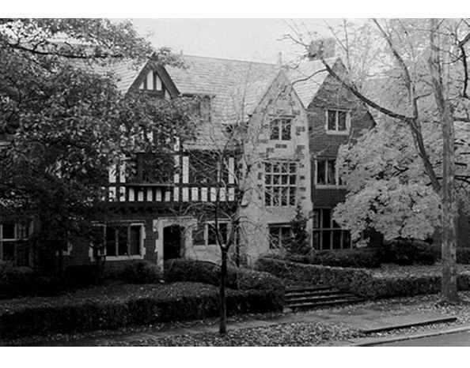

Chapter 14 on the roll
The Phi


- Position on the roll#14
- InstitutionUniversity of Michigan
- Chartered1865
- StatusActive since 1865
- Coat of armsfull-size PDF
Its printed history

Notable brothers of the Phi
In the archive
Pages that name the Phi Chapter or its institution.
Named on 1183 pages across 366 volumes of the archive.
…Chapter can, we hope, explain this to the satisfaction of the Convention. The Phi Chapter reports having expelled Mr. Rowley, a member of that Chapter. We should recommend to the Convention that a Chapter expelling a member should notify t…
…prosperity of old Psi U." 30. Feom Granville W. Brov/ning (Phi '11) of the University of Michigan, Ann Arbor, Mich. " The Phi sends congratulations to the Convention, and announces a big victory over Alpha Delta Phi Just achieved. [Adopted, 1870;…
Page23…No. 3. Resolved, etc., That the Hon. Orlando MacBarnes, graduate of the University of Michigan of the class of 1850, be and is hereby declared a member of the Psi Upsilon Fraternity.
…the class of that small and select J. P. Coates, Box 159, Gambier, O. iW/ (University of Michigan 1865). Chapter family^was a burly Yankee, of general gumption, and a, Rooms, corner of Lib erty and Main streets, Ann Arbor ; meets Saturday evening…
…159, Gambier, O. 2. Catalogue of the Psi Upsilon Fraternity. NewYoik, PHI (University of Michigan 1865).Coirespondence to Mr. 1878. ^to. J. H. Raymond, Lock Box 96, Ann Arbor, Mich. The new General Catalogue, now in press. It will contain a consid…
Page8…Gambier, O. and in the important offices of Class Day. Of the ninety- PHI (University of Michigan 1865). Coirespondence to Mr. J. H. Raymond, Lock Box 96, Ann Arbor, Mich.
…9, Gambier, O. pelmeier, Louisville, Kentucky. First bass: Mr. P. B. PHI (University of Michigan 1865). Coirespondence to Mr. J. H. Loomis, jr., '80, Jackson, Michigan; Mr. E. H. Ranney, Raymond, Lock Box 96, Ann Arbor, Mich. '76, Kalamazoo, Mich…
Page8…Mr. John M. Wheeler(0 1841), Treasurer of the 237 Broadway, New York City. University of Michigan, who has long been known and Herbert Lawrence Bridgman, (P 1866), revered by the Phi, and whose devotion to Psi U seems to 537 Pearl street. New York…
Page4…Ostrander CP 1847), who died in Brook Alumni Association of Detroit to the Phi Chapter took lyn, N. Y., in October. The Chapter, without regard to place on the evening of Tuesday, November 26, at the politics, rejoices at the election…
Page4…ier, Ohio. years ago at Peterboro, N. Y., and early gained the friend PHI (University of Michigan 1865). Correspondence to Mr. S. R. ship of the celebrated Gerrit Smith. He was admitted to Smith, Lock Box 150, Ann Arbor, Mich. the bar in 1848, and…
Page8…ur Committee recom mends that the next General Convention be held with the Phi Chapter, in accordance with General Resolution No. 3. 3d. Your Committee consid ers General resolution No. 1 as unnecessary, and recommends that no ac tion b…
Page7…Annual Convention D( SI Upsilon Fraternity, HELD WITH THE PHI CHAPTER, University of Michigan, Ann Arbor, Mich. . Wednesday and Thursday, May 26th and 27th, 1880, NO. IX OF THE PRINTED SERIES. PUBLISHED BY THE EXECUTIVE COUNCIL. 1880.
…- Trentop, N. J.; President James B. AngeU, LL. D., of R. W. WRIGHT, the University of Michigan ; General Joseph B. Hawley ; Ohairman of the Committee of Oonference. the Hon. Clarkson N. Potter ; the Rev. Henry M. Dexter, of the Congregationalis…
…Hjarth Boyesen ; President Seelye, of Amherst CoUege ; Prof. C. H. Adams, University of Michigan ; Mark Harrington ; Bluford WUson, ex-Solic itor of the treasury and P. B. Marcy, Quincy . The toasts and responses continued until a late hour and…
Page22…. S. Hamilton, Kenyon College, Gambier, Ohio.. associate editors. 14. PHI (University of Michigan, 1865).� Corres i3�Zto� Charles L. Bristol, pondence to Mr. A. B. Hale, University of Michigan, Beta � Not elected. Ann Arbor, Mich. Sigma� Charles…
Page8…Kenyon College, Gambier, Ohio. 319 Second avenue, New York city. 14. PHI (University of Michigan, 1865). Corres THE PUBLICATIONS. pondence to Mr. A. B. Hale, University of Michigan, 1. The Catalogue. 9th ed. 1879. Out of print. Ann Arbor, Mich. i…
Page8…e under They are for the public and every one knows their graduates of the Phi Chapter were present, and the proceedings. list was sweUed Until a society is founded by several graduates from interior upon some element of our towns of th…
Page9…he bers a more careful observance of their duty with undergraduates of the Phi Chapter, the Hon. John reference to young Detroiters about to "enter college. M. Wheeler, of Ann Arbor, and the Eev. Martin L. The host suggested that he had…
…Detroit, in holiday was given for the purpose. What a lark it honor of the Phi Chapter, on the evening of November 27, 1877, was. The freshmen, par fin, had the foot of the Mr. Willard Smith Pope, who was a classmate of Prof. Willard hi…
…'77. Frederick H. Dilhngham received the degree Medical Departments of the University of Michigan of M.D. firom the New York College of Physicians and of Dartmouth College. and Surgeons in 1880, and now resides at 118 E. 17th '65. At the last Comm…
…ty of Michigan, 1865) Herbert L. Bridgman, President . . Correspondence to Phi Chapter of Psi S3 Park Place, N.Y. Upsilon, University of Michigan, Box Charles W. Smiley, 2887, Ann Arbor, Mich. Smithsonian Institution, Washington, D. C.…
Page13…ty of Michigan, 1865) Herbert L. Bridgman, . President . Correspondence to Phi Chapter of Psi 53 Park Place, N. Y. Upsilon, University of Michigan, Box Charles W. Smiley, 2887, Ann Arbor, Mich. Smithsonian Institution, Washington, D. C.…
Page13…mal Washington's birthday, in which several of our men KendaU Adams of the Phi Chapter. Professor Adams, had entered, and thus were unable to go down to though a non-resident lecturer, is extremely pop Lehigh. ular at Cornell, and his c…
…irs of Psi Upsilon and especially in the matters of eighth Congresses. the Phi Chapter. He was initiated into the Fraternity Waldo Hutchins, F. '42, of New York. He has in 1865, when the Phi Chapter was founded. been a Representative in…
…f Michigan, 1865) 9. The Psi Upsilon Association of Kan Correspondence to Phi Chapter of Psi sas (1883). President, D. M. Swan; Sec retary, Bestor G. Brown, 239 Quincy Street, Upsilon, University of Michigan, Box Topeka, Kansas. 2887,…
Page13…Chapter-Hall 128 13 Xi Chapter-House 131 14 Gamma Chapter-House 135 15 Phi Chapter-House . . . . . . . 139 16 Psi Chapter- House 143 17 Beta Beta Chapter-Lodge 148 18 Eta Chapter-House 151 19 Cm Chapter-House 155 20 Badges of the…
…of its scheme, asks for further time. 6. The CouncU has received from the Phi Chapter a copy of a protest, filed with the Beta Chapter, relating to the conduct of Mr. Lewis Sherrill Bigelow {B, '85), who has entered the Law Department…
Page15…of the chapters of Psi U. I was a member of the Psi Upsilon Chapter in the University of Michigan for a number of years, and I know that during that time the influ ence of that chapter was always elevating, ennobling upon the members of it. I kno…
…he very Start. Unlike the experience of most newly estabhshed Chapters the Theta Phi Chapter'] of Psi Upsilon would from the first take a leading place in Fraternity circles . Hoping that you wiU feel that in granting us a Charter you not on…
Page19…OTES. PSI UPSILON, PSI U. [Pagel4.J Written for the annual banquet of the Phi Chapter, Oct. 20, 1866. LAMENT OF A MIDDLE-AGED BROTHER. [Page 16.] These verses by Prof. Bailey were originally read by Edmund C. Stedman at the close of a…
Page249…0. Thomas B. Bailey, Sigma '76. William H. Cook, Chi '71. James K. Morgan, Phi Chapter. .H.,S. Deering, Zeta '79, Physician and Surgeon. George B. Knapp, Gamma '59, Manager of Estate of Gardner Brewer. David Hall Rice, Pi '67, Lawyer ;…
Page24…f Rochester was brought into the fold in 1858, Kenyon College in i860, the University of Michigan in 1865, the University of Chicago in 1869, Syracuse University in 1875, Cornell University in 1876, Trinity College in 1880, and the Lehigh Universi…
…ur circumference. The Sixty-third Annual Convention will be held with the Phi Chapter, in the University of Michigan, at Ann Arbor, probably on Wednesday, Thursday and Friday, May 10-12, 1896. Doubtless the dinner will be given in Detr…
…d Annual Convention of Psi Upsilon, will be held under the auspices of the Phi Chapter, at Ann Arbor, Michigan, May 6, 7, and 8, 1896, ending with a dinner in Detroit. I There will be an informal meeting of alumni and under graduates i…
…E CONVENTION OF THE .Psi Upsilon Fraternity, HELD WITH THE PHI CHAPTER, UNIVERSITY OF MICHIGAN, ANN ARBOR. MICH., Thursday and Friday, May 7 and a 1896. No. XXV of the Printed Series. PUBUISHED BY THE EXECUTIVE COUNCIL. Tine Sixty-Ttiird V…
…ta Beta, seven. Seventeen undergraduates in college, fourteen at the are University of Michigan, two at Trinity, and one at Yale. Among the older members are Elisha Taylor (Theta '37), and Clement M. Davison (Theta '38), both well-known citi zen…
…rles Kendall Adams, LL.D. (Phi '61), some time Professor of History in the University of Michigan, and later President of Cornell University. Another graduate member of the Phi, the distinguished astronomer, James Craig
…Government a Solicitor General. Dedicated at a Psi Upsilon Convention the Phi Chapter House during sixteen long years has been for all this region the seat of Psi Upsilon hospitalit)', the shrine of Psi Upsilon devotion. ' And now in t…
…. John Dempster Hammond (of Pi Chapter), President. Edward Mills Adams (of Phi Chapter), Secretary. April 14, 1900.
Page21…10 years, and v,-as never more vigorous than at present. The Alpha Delta Phi Chapter was formed in 1893, and numbers among its members a large number of prominent graduates and undergraduates. Of recent years Chapters of the Delta Kap…
Page29…ly adopted {General Resolution . Special Resolution No. 3, concerning the Phi Chapter, was duly carried. The Committee appointed to invite Acting President Dr. William H. Chandler to address the Convention reported that he was confined…
THE Phi Chapter OF THE Fraternity OF PS I U PSI LON IN THE MCMVI
…titude the Fraternity owes to the late Brother Albert Poole Jacobs, of the Phi Chapter, Class of 1873. By his undying devotion to and tireless energy in working for the interests of the Fraternity he rendered in his long, active career…
Page14…and by transmitting a copy thereof to the members of his family and to the University of Michigan, which he served so long and with such high achievement. The resolution was adopted by the Convention. Bro. Becker (Upsilon), for the Committee on N…
…41 Prince St., Rochester, N. Y. IOTA Kenyon College Gambler, Ohio. PHI University of Michigan 702 So. University Ave., Ann Arbor, Mich. OMEGA University of Chicago 5639 University Ave., Chicago, 111. PI Syracuse University 101 CoUege Place,…
…41 Prince St., Rochester, N. Y. IOTA Kenyon College Gambler, Ohio PHI University of Michigan 702 So. University Ave., Ann Arbor, Mich. OMEGA University of Chicago 5639 University Ave., Chicago, 111. PI Syracuse University 101 College Plac…
Page5…41 Prince St., Rochester, N. Y. IOTA Kenyon College Gambler, Ohio PHI University of Michigan 702 So. University Ave., Ann Arbor, Mich. OMEGA University of Chicago 5639 University Ave., Chicago, 111. PI Syracuse University 101 College Plac…
…41 Prince St., Rochester, N. Y. IOTA Kenyon College Gambler, Ohio PHI University of Michigan 702 So. University Ave., Ann Arbor, Mich. OMEGA University of Chicago 5639 University Ave., Chicago, 111. PI Syracuse University 101 College Plac…
…41 Prince St., Rochester, N. Y. IOTA ^Kenyon College Gambier, Ohio PHI ^University of Michigan 702 So. University Ave., Ann Arbor, Mich. OMEGA University of Chicago 5639 University Ave., Chicago, 111. PI Syracuse University 101 College Place,…
…. .41 Prince St., Rochester, N. Y. IOTA Kenton College Gambier, Ohio PHI University of Michigan 702 So. University Ave., Ann Arbor, Mich. OMEGA University of Chicago. . . 5639 University Ave., Chicago, IU. PI Syracuse University 101 CoUege Pl…
…arvey, '24, a recting efforts of Brother Gerald Bennett, transfer from the University of Michigan. who served as chairman, and Brothers D. In addition, three more pledges joined the L. Jones and Robert SoeUner, the affair ranks from the incoming m…
Page56…. .41 Prince St., Rochester, N. Y. IOTA Kenyon College Gambier, Ohio PHI University of Michigan 702 So. University Ave., Ann Arbor, Mich. OMEGA University of Chicago. 5639 University Ave., Chicago, 111. . . PI Syracuse University 101 College…
…er. .41 Prince St., Rochester, N. Y. IOTA Kenyon College Gambier, Ohio PHI University of Michigan 702 So. University Ave., Ann Arbor, Mich. OMEGAUniversity of Chicago. .5639 University Ave., Chicago, IU. . PISyracuse University 101 CoUege Place,…
….41 Prince St., Rochester, N. Y. IOTA ILenyon College Gambier, Ohio PHI University of Michigan 702 So. University Ave., Ann Arbor, Mich. OMEGA University of Chicago. . . 5639 University Ave., Chicago, 111. PI Syracuse University 101 Colleg…
…ster. .41 Prince St., Rochester, N. Y. IOTAKenyon College Gambier, Ohio PHIUniversity of Michigan Ann Arbor, Mich. OMEGAUniversity of Chicago. 5639 University Ave., Chicago, IU. . . PI Syracuse University .101 CoUege Place, Syracuse, N. Y. CHI Co…
…. .41 Prince St., Rochester, N. Y. IOTA Kenyon College Gambler, Ohio PHI University of Michigan Ann Arbor, Mich. OMEGA UisnvBRSiTY of Chicago. .5639 University Ave., Chicago, 111. . PI Syracuse University 101 College Place, Syracuse, N. Y. C…
…. .41 Prince St., Rochester, N. Y. IOTA Kenyon College Gambier, Ohio PHI University of Michigan Ann Arbor, Mich. OMEGA Untvtersity of Chicago. 5639 University Ave., Chicago, 111. . . PI Syracuse University 101 College Place, Syracuse, N. Y.…
…Springs and Doctor Henry F. Adams (XI '05), professor of psychology in the University of Michigan. Three grandchildren, Miss Adelaide and Miss Marjorie Adams of Oak Park, 111., and Henry H. Adams of Ann Arbor, Mich., also survive him. The Rev. G,…
….41 Prince St., Rochester, N. Y. IOTA ElENYon College Gambier, Ohio PHI University of Michigan Ann Arbor, Mich. OMEGA University of Chicago. .5639 University Ave., Chicago, lU. . PI Syracuse University 101 College Place, Syracuse, N. Y. CHI…
…. .41 Prince St., Rochester, N. Y. IOTA Kenyon College Gambier, Ohio PHI University of Michigan Ann Arbor, Mich. OMEGA University of Chicago. 5639 University Ave., Chicago, 111. . . PI Syracuse University 101 CoUege Place, Syracuse, N. Y. CH…
…er 41 Prince St., Rochester, N. Y. IOTA Kenyon College Gambier, Ohio PHI University of Michigan Ann Arbor, Mich. OMEGA University of Chicago 5639 University Ave., Chicago, IU. PI Syracuse University 101 College Place, Syracuse, N. Y. CHI Corn…
…University of Kansas. The Committee reported re ceiving petition from the Phi Chapter inviting the fraternity to hold its 1926 Convention at Ann Arbor. It was moved, seconded and passed that the petitions of the three societies for est…
Page8…r 41 Prince St., Rochester, N. Y. IOTA Kenyon College Gambier, Ohio PHI ^University of Michigan Ann Arbor, Mich. OMEGA ^University of Chicago 5639 University Ave., Chicago, 111. PI Syracuse University 101 College Place, Syracuse, N. Y. CHI Co…
…r 41 Prince St., Rochester, N. Y. IOTA Kenyon College Gambier, Ohio PHI ^University of Michigan Ann Arbor, Mich. 0MEG.\ ^University of Chicago 5639 University Ave., Chicago, 111. PI Syracuse University 101 College Place, Syracuse, N. Y. CHI C…
…Ramsat Findlater, the college with life insurance. Associate Editor. Phi University of Michigan write this, the Phi is about I With pleasant recollections of Syra AS ready to caU "Conclusion" to as cuse stiU in my mind, the Phi is think successf…
Page57…ter 41 Prince St., Rochester, N. Y. IOTA Kenyon College .Gambier, Ohio PHIUniversity of Michigan 1000 HUl St., Ann Arbor, Mich. OMEGA Univeesity of Chicago 5639 University Ave., Chicago, IlL PI Sybaouse Univebsity 101 College Place, Syracuse,…
Records of the Convention oif The Psi Upsilon Fraternity Held With The Phi Chapter AT THE University of Michigan April 29, 30, and May 1, 1926 Ann Arbor, Mich. Published at the Direction of The Executive Council The Ninety-third…
…McClain, the honor committee and senior council. Associate Editor. PHI ^University of Michigan Phi is at present trying to fit a scents of lUac and rose ever since. Al 'yHE swelled head into its new home at ready Brother Morey, in search of mor…
Page82View of Ln-mr, Room in New Home of the Phi Chapter
…e 93rd year of Psi Upsilon was held THE April 29, 30 and May on 1 with the Phi Chapter, University of Michigan, at Ann Arbor. The official delegates were : Executive Council Earl D. Babst, Iota-Phi '93 E. H. Naylor, Zeta '09 B. Bourke…
…ster 41 Prince St., Rochester, N. Y. IOTA Kenyon College Gambler, Ohio PHIUniversity of Michigan 1000 Hill St., Ann Arbor, Mich. OMEGA University of Chicago 5639 University Ave., Chicago. IlL PI Syracuse University 101 College Place, Syracuse, N…
…April 7, 1926 to March 31, 1927 inclusive. Convention Fund Expenditures Phi Chapter acct. 1926 Convention $ 500.00 Expense Council Members acct. 1926 Convention 104.52 -$ 604.52 IncoTne Accrued income by 75 cents per active member,…
Page22…lucky we're not all tion as Dean of the Forestry School Juniors ! and the University of Michigan. We have tidings of good cheer to Edwaed F. Dana, finish up with this time, scholarship in Associate Editor. PSI Hamilton College CINCE the last a…
…41 Prince St., Rochester, N. Y. IOTA Kenyon College Gambier, Ohio PHI 'University of Michigan 1000 Hill St., Ann Arbor, Mich. OMEGA University of Chicago 5639 University Ave., Chicago, 111. PI Syracuse University 101 College Place, Syracuse,…
…Abel is 70 years old. He is a native of Cleveland, and a gradu ate of the University of Michigan, Johns Hopkins University and the University of Strassburg. JOSIAH WYATT WILLIS, PHI '73 BUFFALO Psi U who can look back more than 55 years in Psi U…
…ch., on May 3, 1843. He studied at Knox CoUege, taught school, entered the University of Michigan as a junior and was graduated in 1863. His medical studies were pursued
…5 50. Delta Tau Delta 9 .016 All actives 1444 1.363 All Pledges 404 .920 UNIVERSITY OF MICHIGAN For Full College Year, 1926-27 (Does not give fractional grades but ranking is official) Approximate Approximate Rank Name Average Rank Name Average…
…collection of chapter records. "There is one," said the speaker, "from the Phi Chapter which appears in a book the size of an ordinary lawyer's journal, somewhat larger than the Dartmouth Alumni Magazine. It was the duty of a senior ea…
…hich he entered the University of Michi gan, Ann Arbor. Graduated from the University of Michigan in 1874, he returned to Cincinnati, where he took up the study of law in the office of Stanley Matthews, later Associate Justice of the United States…
…a Epsilon 67. Kappa sgna 2.821 2.652 3.095 2.523 .129 68. Alpha Phi Alpha UNIVERSITY OF MICHIGAN Scholarship Record 1926-27 1927-28 AVG. RANK AVG. RANK 27 72.4 48 Acacia 72.7 48 70.2 59 Alpha Chi" Rho. (Alpha Beta Phi) 71.1 71.9 dO 76.7 12 Alph…
124 THE DIAMOND OF PSI UPSILON PHI University of Michigan to say, the Phi members Football season, come and gone, has left NEEDLESS returned to their work after varied and pleasant holidays. Each one pledge…
…t one of the Eastern societies, the same which had been the pioneer at the University of Michigan in 1845, and at the University of Minnesota in 1874, made its appearance. This illustrates the backward ness of fratemity growth at Madison; and part…
…U song written by him especially for the convention of 1896 held with the Phi Chapter. CLAYTON BUTTERFIELD ELECTED OFFICUL DIRECTOR OF HERALDRY Clayton Butterfield, Pi '11, who has, for several years, acted as chairman of the committ…
…cinnati, Ohio Thomas Nelles Toledo, Ohio John T. Pheatt Toledo, Ohio PHI University of Michigan Class of 1931 Alexander Minty Waldron Ann Arbor, Michigan. Class of 1932 Max Harrison Demorest Flint, Michigan Rayner Field Jackson, Michigan Class…
…very loyal Psi U., contributing a goodly sum to the building fund for the Phi Chapter House. Rev. Edward C. Winslow, Gamma '70 Rev. Edward Clark Winslow, clergyman and educator, died December 28, 1929 at the home of his daughter, Mrs.…
…74. At the forty-seventh annual Convention of the Fraternity held with the University of Michigan in May 1880, the proceedings of the Convention dis close that the mailing list of the magazine comprised subscriptions of only 108, coming from twelv…
…he was initiated at the Iota Chapter he had previously been pledged by the Phi Chapter in his home town Ann Arbor, before entering Kenyon College. Mr. Cornwell was the only son of Henry Ambrose Cornwell and Phoebe MacArthur Cornwell, on…
…received from Brother Herbert S. Reynolds, Phi '04, past president of the Phi Chapter Alumni Association: "I received theDirectory of the Psi Upsilon Fraternity this morning and I want to congratulate you, as I think it much ahead of…
…r with the undergraduate member ship. I am somewhat like a freshman at the Phi Chapter years ago, who at tended the meeting of his class, and carried on a wave of enthusiasm, in his peroration somewhat extended himself. In a loud, shril…
…an instructorship in chemistry, after hav ing received two degrees at the University of Michigan. Two years later he left for Europe, where he pursued advanced studies until 1891 in Munich, Dresden, Aachen, and Wiesbaden. In the early days at Cor…
…received from Brother Herbert S. Reynolds, Phi '04, past president of the Phi Chapter Alumni Association: "I received theDirectory of the Psi Upsilon Fraternity this morning and I want to congratulate you, as I think it much ahead of…
…assachusetts Institute of Technology, in 1878, after which he attended the University of Michigan. In his long business career. Brother Henshaw was first with the Boston Bridge Works and later was a member of the iron firm of N. S. Bartlett & Co.…
100 THE DIAMOND OF PSI UPSILON PHI University of Michigan Academic Averages of Fraternities 1930-1931 1. Triangle 81.0 31. Hermitage 75.8 2. Phi Alpha Kappa 80.8 31. Alpha Sigma Phi 75.8 3. Kappa Delta Rho…
…ED to the many honors already his, John J. Abel, who graduated /\ from the University of Michigan in 1883 and there later received the JLA. degrees of A. M. (Hon.) '03, Sc.D. (Hon.) '13, of Johns Hopkins Medical School in Baltimore, recently was e…
…tes by William Holme, Delta '06 247 Glee Club of the Class of 1872 at the University of Michigan 24.9 In Memoriam , 252 Directory Chapter Roll 259 The Executive Council . . . i 259 Chapter Alumni Associations 260 Alumni Club Directory 261…
…hio John T. Stickney Toledo, Ohio William G. Turner Mt. Vernon, Ohio PHI University of Michigan Class of 1935 John Schaberg Kalamazoo, Mich. Robert Taylor Flint, Mich. Class of 1936 Alfred Davock Detroit, Mich. Ted Evans Battle Creek, Mich. R…
…Judge Cutting, one of the city's pioneer golfers. He was a graduate of the University of Michigan. Oliver Gildersleeve, Beta Beta '12 Oliver Gildersleeve of Gildersleeve, Conn., member of ship an old building family and president of the Gildersle…
Page40…68 Detroit, Mich. Francis George Willard, '82 Topeka, Kansas. PHI CHAPTER University of Michigan William Thomas Underwood, '72 Chicago, III. James William Ferry, '73 Chicago, III. Albert Poole Jacobs, '73 Detroit, Mich. George Rutley Gibson, '74…
…ter, Mrs. Harriett C. Stewart, of Cincinnati, survive. Graduating from the University of Michigan law school, Mr. Potter came to Jackson to enter the banking business with his father, the late Nathan Potter, then head of the Jackson City bank. He…
…commanded with the rank of Colonel. Studying in private schools and at the University of Michigan, Garvin Denby began his business career in the Detroit branch of the Solvay Process Company. In 1907 he was transferred to the Syracuse plant and mad…
…e congratulations to the Mother Chapter on its one hundredth birthday, the Phi Chapter wishes to express its pride at being a unit in one of the strong est and most honored of fraternities.To Psi UpsUon increasing success and continued…
…'T "iHE President of the Council stated that Mr. Albert C. Jacobs I of the Phi Chapter, Class of 1921, who was the guest of the Council this evening had agreed to undertake the preparation of Volume II of the Psi Upsilon Epitome, the fi…
…on has had in a long time, would make the rest of Associale Editor. PHI University of Michigan at the Phi has settled down after a result of the efforts of Brother Morgan LIFE the opening two weeks of the semes ter during which the chapter was…
…er fraternity expenses. Shortly before the Beta requested to withdraw, the Alpha Delta Phi Chapter at Yale was dosed. The Executive Council tentatively accepted the withdrawal of the Beta. This is subject to the approval of this Convention. Voting…
Page19…ck Stickney, Returning to the active Brothers we Associate Editor. PHI University of Michigan walked. They ran. They handling of the entire week's activities, THEY sleep. They missed classes. lost They worked hard. And finally, credit is due…
…iners, we have had the efficient and brotherly co-opera tion of the EpsUon Phi Chapter in a generous loan, brought down by Brother HuU. It is a work of art, as you have seen, consisting of an eightgaUon stainless steel punch bowl, and a…
…arey '11 Cari A. Weiant 'OS Walter T. Collins '03 Ralph C. Ringwalt '94 PHIUNIVERSITY OF MICHIGAN Stephen C. Babcock '97 Frederick W. B. Coleman Walter Robbins '96 Eari D. Babst '93 '96 S. Spencer Scott '14 Standish Backus '98 Boise C. Hart '07 C…
…reak up of the Mystical Seven Fraternity, out of which were formed the new Gamma Phi Chapter of Delta Kappa Epsilon, and the Senior Society, Owl and Wand, which later resumed the original name. Since Chi Psi had, two or three years Mystical S…
118 THE DIAMOND OF PSI UPSILON PHI University of Michigan Upon returning to school last fall our ated Stark Ritchie and Joseph Walsh. chances for what might be termed a Brother Ritchie is one of Coach Kipke'…
…n. "Beginning as a mailing clerk immediately after his graduation from the University of Michigan in 1909, he later entered the buying di-
12 THE DIAMOND OF PSI UPSILON PHI University of Michigan Class of 1938 John Phelps Ann Arbor, Mich. Roderick Sheldon Webster Evanston, 111. Class of 1939 Everrett Arthur Houghton Chicago, HI. Class of 194…
…m Yale University, the University of Southern California, Columbia, Brown, University of Michigan, Harvard and Union. He is a Chevalier of the French Legion of Honor and Chancellor of the American Academy of Arts & Letters. Governor Cross was firs…
…land G. Allen, letic Union championships at Yale's Associate Editor. PHI University of Michigan After two hectic weeks, life is finally known midnight oil and washing every beginning to take on a more normal thing from Anthropology to Zoology as…
…and G. Allen, elaborate May dance ever given here. Associate Editor. PHI University of Michigan With finals again drawing near, the support to the football, track, swim Phi reviews her achievements of the year. ming, hockey, and golf teams of th…
…., Winnetka, 111. David Avery George Cramm PHI Starke Donnaly Frank Duntze University of Michigan Herbert Ecker Class of 1939 Howard Fairchild Harry Calcutt, Traverse City, Mich. George Hilfinger Gordon Baxter Carver, Bay City, Richard Hill Mich.…
…and became a distin Bridgman, Gamma '66. His was in guished member of the Phi Chapter. deed a difficult task. While the His interest in the Fraternity at Fraternity was still recovering from large began at an early date. He was the sho…
…ord of long and distinguished August 8, 1874. After graduation a from the University of Michigan in service to his alma mater. His teach 1896 with the degree of Bachelor of ing career at Yale began in 1894 and continued until 1930 when he Philoso…
…imball, Comptroller, New York University; Alexander G. Ruthven, President, University of Michigan; and Henry M. Wriston, President, Brown University, all appointed by the Association of American Colleges; Alvan E. Duerr, Past Chairman, National In…
…lsey, Upsilon '80, long Professor of Latin Lan guage and Literature at the University of Michigan, a dis tinguished classical scholar, was one of the most prominent Psi U's of yester year.
…a member of the faculty of baker distributor in Los Angeles, now head the University of Michigan, an au of the Studebaker Company, was one of those present. thority on the Philippine Islands, "The centenarian who had sat on the being Secretary of…
…by the are given careful and vivid instruction in the Phi chapter at the University of Michigan as meaning of the Owl Song and this section of "small fry societies," attempted to influence our Fraternity's history is embodied in a dis existing…
…olis Heights, Pa. Cornell University PHI Class of 1943: WUliam Fearn Bohan University of Michigan nan, Columbus, Ohio, John Leavitt Class of 1941: Thomas E. Deibel, Sag Carter, Jackson, Mich.; Charles Alex ander Colbert, Elkhart, Ind.; Robert inaw…
…chi gan) school when 17 years old. His succeeding impressive career at the University of Michigan included be ing elected president of the Junior Literary Class, president of the Com edy Club, and president of the Phi chapter in his senior year, a…
…t given us by the Phi chap ceived a letter from Mr. Jacobs tell ter at the University of Michigan. ing the attitude of the various chap In the Phi chapter the man de ters in regard to our petition and pended upon by Mr. Jacobs was suggesting that…
…Upsilon Sigma '49, was President of the in Brown University and to the end University of Michigan from 1871 of his life an enthusiastic member to 1909, and also served as Minister of that organization. He strongly to China and to Turkey. The . . d…
…lliam S. Potter, PHI Lafayette, Ind. Class of 1944: Chester J. Allen, Jr., University of Michigan Saratoga Springs, N.Y.; George K. Class of 1943: Bruce A. AUen; Ben Anderson, Port Henry, N.Y.; Gerald B. Gillespie Parsons. Austin, Plattsburg, N.Y.…
…hester, New York Iota Kenyon College Gambier, Ohio November 24, 1860 Phi University of Michigan 1000 Hill Street January 26, 1865 Ann Arbor, Michigan Omega University of Chicago 5639 University Avenue April 17, 1869 Chicago, Illinois Pi Syracu…
Page18…loved professor of Engineering at the road executive; the Rt. Rev. Edward University of Michigan, long a de L. Parsons, Protestant Episcopal voted friend of the Phi; and Henry Bishop of Cahfomia; John W. BeckMcMahon Painter, prominent New with an…
…le W. Browning (Phi and in reciprocating the friendly grip of '77), of the University of Michigan, brothers. Ann Arbor, Mich. CONVENTION OF 1878 who introduced Sterling G. Hadley, Forty-fifth Annual Convention at the Upsilon, May 2-3; 16 chapter…
…ghest buried under holy soil; a journey ideals of culture and refinement. Phi Chapter 721
Page9…tably the best qualified authority. there on January 30, 1909. His father, The Phi Chapter, at the time of Nathaniel Poole Jacobs, served under Jacobs' initiation, was still in the after President Lincoln as United States glow of its succes…
…., K'04, School of Forestry & Hann, General Motors Bldg. Dickson, C, 0'24, University of Michigan Bodman, H. E.. Ph'9 6, 1400 Buhl Bldg. Burleigh, G. C, Z'40, 73 Oxbow Rd. Durfee, P. S,, Ph'41, 1926 Day St. Bogart, P, B., Jr., G'lS, 127 Calvert Av…
Page22…rs in the But there is admittedly a decided lack of fraternity itself. The University of Michigan studying in the chapter, and that lack results requires of all fraternity pledges an accept from the usual causes of procrastination, lack able schol…
…James B. Angell May 20, 1880 I do think we ought to have a real re To the Phi Chapter of the Psi Upsilon vival of interest in chapter literary exercises even to the extent of sug Fraternity. gested programs, and at all future Gentlem…
…placement. Neither fund may be di verted for any other purpose, and by the University of Michigan use of such methods we have found that Rushing we have not yet been short of funds at inexpedient times. Having paid all of our This is one phase of…
…d to the PHI CHAPTER Iota will be the greater gain of the Naval Air Corps. University of Michigan The Presidency of the Chapter, how ever, passes into the extremely capable bands of Brother Richard Stickney, who last year held the position of Trea…
…octor of Humane Letters. ing military duty earned an LL.B. degree from the University of Michigan. Mr. Allis married in 1912 Miss Jean Surviving are his widow, Mrs. Mary T. MacCoy of Bryn Mawr, Pa. Mrs. Allis Ball, and two sisters, Mrs. John G. St…
…Minnesota, and Ornith Frederick P. Keppel, '98, president of ology at the University of Michigan Biologi the Carnegie Corporation of New York, who cal Station. A wildlife photographer of great since 1922 has directed the $135,000,000 trust note a…
…ilon Alumni Association of uine worth. Western New York, arranged for the University of Michigan presentation of The Annals, which was inscribed "Presented to the University of In this era of centennial histories of the Rochester by the Executive…
…John T. Stickney, '36 U.S.A.A.C. Herman Tausig, '43 B.A.A.S. Delta Chapter Phi Chapter Lt. Comdr. RosweU C. Peardon, '16 U.S.N.R. Maj. James H. Potter, '19 U.S.A.A.C. Capt. Elwood W. Dalton, '30 U.S.A. Lt. Comdr. Albert C. Jacobs, 21 U.…
…ochester, New York Iota Kenyon College Gamhier, Ohio November 24, 1860 Phi University of Michigan 1000 Hill Street January 26, 1865 Ann Arbor, Michigan Omega University of Chicago 5639 University Avenue April 17, 1869 Chicago, Illinois Pi Syracuse…
Page5…y R. report of a visit to the Epsilon Phi Small, Phi '09, President of the Phi Chapter on December 8, 1942, by Alumni Corporation. Brother H. P. Douglas, Chi '94. The Secretary reported that the Rec A committee appointed by the ords of…
…hapter; times. Fifty-five years ago, at another Psi Upsilon flag, from the Phi Chapter; point, the Hesperian group started its American flag, from the Chi Chapter; onward course; today, it debouched in Canadian flag, from the Canadian C…
…lumbia, the University of His newspaper experience was one Pittsburgh, the University of Michigan, of the most widely varied in the profes Hamilton CoUege, Union, the Univer sion. In his haff-century of newspaper sity of Toronto and the University…
…eived on July 1, 1943, withdrew from Surviving are his widow, two chil the University of Michigan Law School dren, his parents and two brothers, in April of 1942 to begin training as a Major Donald D. Carrick, Nu '28, serv Naval Reserve officer. H…
…r and a half years of war our campus. This condition we plan to con the E. Phi Chapter is still carrying on. Al tinue, ff' possible, throughout tiiis year by though we have lost a great nmnber of men pledging enough men to compensate fo…
…the local fraternity at McGill Univer sity which later became the Epsilon Phi Chapter.The Editors. who had the pleasure of hear THOSE ing Harry T. Logan, the Centen at nial Convention, present a brief on be half of the local which lat…
…i Brothers at West Point Chapter, and President of its Alumni Association. The Phi Chapter has the honor of Lieutenant Fred F. Kingsbury, Theta being represented by two of its mem '41, has been missing in action in the bers at the Military…
…armed forces, to bring our PHI total number at this time to eighteen men. University of Michigan The foUowing men have been pledged: It is between semesters at Michigan. The John Bachman, Burton Barnard, Walter HaPhi had their last rneeting of th…
Page23…been increased by seven being initiated during the past twelve months. PHI University of Michigan Although the house is occupied by the Uni The beginning of the faU term found only versity as a dormitory our group has met regu eleven active member…
…erle Melvin, Robert Mof fat, J. Suantz, and Phillip Wagner. The latter PHI University of Michigan student has received his discharge after five We are now in the fourth week of the years in the Navy. The other three members spring term here at the…
…ssion. There were three pledges initiated at the end of the semester. PHI University of Michigan They were William Floyd Cummins, Bruce Conklin Follett and Samuel David Bingham. Due to the loss of several brothers at the Many fine parties were he…
Imitiation Dirge of Phi Chapter P51 Up5110N ' Ml. I.l I'l-^ All ye! mor - taus. who havl trodthl a^h - cn way Ano viHOiE. rttr have. BRuaHto a -side thc Cyp-rian de.w J rl- c) J…
…sident Turner cited the long and successful tenure of house mothers at the Phi Chapter. Brother Frederick S. Brandenburg. Rho '09, told the Convention that the house mother idea had spread throughout many of the colleges in the mid-west…
Page21…ith the Initiation Dirge costs have pyramided, we are still glad to of the Phi Chapter added. It also contains sell this book at the old price of $2.00. Use a recommendation that every Psi U learn the order form below. Please draw check…
Page5…a graduate of Kent School has lost his sight. Faced with a similar and the University of Michigan. He disaster other men of his age would likely entered the service in 1941 and served in call a halt and spend the remainder of their the Solomons an…
…part of any member of the Chapter. The services of faculty advisers should University of Michigan Interfratemity Alumni Conference deserves special com be fully utilized. A shy freshman fre ment. It reads: quentiy hesitates to get in touch with a…
…r of the brothers have re turned from the services and are undertaking PHI University of Michigan an ever increasing part in campus affairs. The In the freshly redecorated house on Hill returning brothers include: Ames Curchin, '43; Street the mem…
…1860 Gambier, Ohio Walter T. CoUins, '03, 52 WaU St., New York, N.Y. PHI * University of Michigan 1865 1000 Hill St., Ann Arbor, Mich. Sidney R. SmaU, '09, 2356 Penobscot Bldg., Detroit, Mich. OMEGA fi University of Chicago 1869 5639 University Av…
Page35…60 Gambier, Ohio Walter T. Collins, '03, 52 WaU St., New York, N.Y. PHI * University of Michigan 1865 1000 Hill St., Ann Arbor, Mich. Sidney R. SmaU, '09, 2356 Penobscot Bldg., Detroit, Mich. OMEGA fi University of Chicago 1869 5639 University Av…
Page35…r, Henry Wheaton Kunhardt, Donald Sprague McCreary, John Oliver Perry, PHI University of Michigan Richard GiUis Ruffie, Donald Draper Sperry Since our last correspondence, the Phi has and Douglas MUton Thomas. The many alumni initiated a new group…
…ty of Michigan K. Loveland, corresponding secretary; Brother This fall the Phi Chapter house again Raymond L. WoodaU, treasurer; and Brother opened to an above-capacity thirty-three men. Thomas D. Armstrong, intramural Back for their fi…
…ty 1858 UpsilonUniversity of Rochester 1860 Iota Kenyon College 1865 Phi ^University of Michigan 1869 Omega University of Chicago 1875 Pi Syracuse University 1876 Chi Cornell University 1880 Beta Beta Trinity College 1884 Eta Lehigh Unive…
Page4…stre. Dan K. Loveland Robert Byerly Associate Editor Associate Editor PHI University of Michigan OMEGA University of Chicago The Phi pledged the following men this The autumn quarter closed with a very term: Richard Austin, of Detroit; Allen Cam-…
…nter-Fraternity Council. This is an honor richly deserved, for Brother PHI University of Michigan Chapman has been working long and earnestly for the best interests of the Chapter. In line with the policy of getting the House The basketbaU team un…
…860 Gambier, Ohio Walter T. CoUins, '03, 52 WaU St., New York, N.Y. PHI * University of Michigan 1865 1000 Hill St., Ann Arbor, Mich. Donald A. Finkbeiner, '17, Box 557 M.O., Toledo 1, Ohio. OMEGA fi University of Chicago 1869 5639 University Ave…
Page36…. The Chapter is ex tremely strong in all extra-curricular activities. PHI University of Michigan The fraternity house itself is in excellent (Bobert W. Byerly, '49). The Chapter mem shape, and a library is being constructed on bership consists of…
…cordial invitation is extended to all Brothers who visit the campus at the University of Michigan. Omega (William S. Gray, III, '51). The system at Chicago differs from that at every other college. The University of Chicago takes students for the…
Page14…ni and The room was filled to capacity, the center undergraduates sang the Phi Chapter Ini part being reserved for the initiates and tiation Dirge, the initiates filed in and to their escorts. The latter were undergradu their places. Br…
…as your education? Later, in Colorado, I was surface foreman I went to the University of Michigan, at the new Rowe mill, at the portal of the where I got an A.B. degree in 1902; then Yak tunnel in Leadville. Afterward, I went to the Michigan Colle…
…ciation requesting the Appreciation was expressed for the un right for the Phi Chapter to initiate a tiring work, of Brother Edward C. Peattie, Phi '06, Editor of The Diamond, and it pledge recently killed on mihtary duty. was moved tha…
…r having the largest varsity athletic participation of any fraternity. PHI University of Michigan Prospects for a well-rounded social calen The 32 active members who returned for dar look especially bright for the current the fall semester were so…
…rs throughout the year. There are twenty thousand students enrolled at the University of Michigan, but the Chapter feels that it has a good representation on athletic teams. There are five 'varsity letter men and several J V letter men. In other a…
Page19…ball team last fall. After a rugged schedule, including Notre Dame and the University of Michigan, Michigan State Spartans ended the season, overwhelming the University of Arizona at Tucson 75-0. Arriving early in the sun and desert country, the M…
Page13…chard S. Coffin, '51, has taken over as house president for the Spring PHI University of Michigan term. At the same election, Frank Read, '51, The academic and the social side of Michi became first vice-president. Bud Kaimer, '52, gan ought to get…
…hool before cent merging with the Peoples' Commercial matriculating at the University of Michigan. and Savings Bank. He also served as director He served in World War I from 1916 to 1918 of the Bay Trust Company from 1932 to 1949. and was a former…
Page34…been very active socially this quarter. The Hard Times Party was held PHI University of Michigan this year on October 28 and attracted a large The year got off to a fine start socially with number of people from all over the campus. a party with…
Page21…Bruce J. Maguire, Jr., '53). This has been a very successful year for the Phi Chapter. We started off in the fall by getting all of the Brothers working together to put over one of the best rushing periods we have ever had. We pledged…
Page24…ers on the varsity golf, PHI tennis, and basebaU teams this spring. At the University of Michigan close of the swimming season, Stewart C. The highfight of the spring term was our EUiott, a Psi U, was elected co-captain of the pledge formal held i…
…erican delegation to the Pan- American Olympic Games held in Argentina PHI University of Michigan in February. We also have members on the PHI (Bruce J. Maguire, Jr., '53). This has Freshman goff, tennis, football, wrestling and been a very succes…
…uires both a weU thought out plan, and a practical appli cation of it. PHI University of Michigan Fortunately, our fears of last June of a The social year was begun, as it has for drastic cut in membership due to the draft, Michi- did not material…
…ress the Conven tion. Recognition having been obtained, he stated that the Phi Chapter desired te recommend that in the future all Chapter votes on a petition for a new chapter should be treated as secret ballots. He further stated tha…
Page10…by Harrison Greer, Iota '27, who added a great deal of impetus to our PHI University of Michigan lagging bass section, among other things. The Chapter was deeply moved to hear Our annual pledge formal was held on De Brother H. Mason, lota '52, ce…
Page26…HE DIAMOND OF PSI UPSILON PHI those carried over from the first semester, University of Michigan The ending of the first semester and the be brings the number of pledges to 16. The highlight of our social calendar for the ginning of the second ha…
Page26…23 m Senator Robert A. Taft, Beta '10, talking with three members of the Phi Chapter at the banquet fol lowing the Senator's campaign appearance at Ann Arbor. Left to right: Ralph Dwan, Pete Shaw, Brother Taft and Jack Borsum. late J…
…itual, further noted that the condition of Psi U was Brother Harper of the Phi Chapter then good and that the faith of the founders had asked for the floor and stated that he wished been justified for 119 years, with no funda to make a…
…during the period from June, 1951 to June, 1952, be awarded te the Epsilon Phi Chapter; and RESOLVED: That your Committee desires that honorable mention for outstanding improvement in scholarship be accorded to the Zeta CSiapter; and R…
Page12…nn Arbor, a graduate of largest university in the Rocky Mountain area, the University of Michigan, '24, and a and is credited with restoring the Univer daughter of Junius E. Beal, for 32 years a sity to a position of leadership among in Regent of…
Phi Chapter of 1909. Secretary of the Treasury Humphrey is the first man, extreme left, third row from front. The Diamond of Psi Upsilon OFFICIAL PUBLICATION…
…ier, Ohio Jack H. Critchfield, '35, 342 N. Beaver St., Wooster, Ohio. PHI* University of Michigan 1865 1000 Hill St., Ann Arbor, Mich. Donald A. Finkbeiner, '17, 823 Edison Bldg., Toledo 4, Ohio. OMEGA fJ Untversity of Chicago 1869 5639 University…
Page4024 THE DIAMOND OF PSI UPSILON PHI University of Michigan in general, and the addition of at least two new ones to the already existing group of nine. Thus all of the fraternities here are looking forward…
…forementioned elements in getting to know of Psi Upsilon on Decem into the Phi Chapter each other better on more sociable terms. ber 5, 1953. Another event similar to this will be planned I would also like to say that we were very for t…
…amazing prospect of rush ing now confronts the Chapter. Pledging will PHI University of Michigan occur February 22. This is the first year for second semster rushing at Kenyon. Freshmen will continue living in the newly constructed freshman dormi…
Page26…Arbor this Spring to drop in on us at the Phi. CHI Cornell University PHI University of Michigan Mid May finds the Chi still waiting for its Soon after the beginning of the Spring share of good weather, rain and cold having Semester we at the Ph…
…THE DIAMOND OF PSI UPSILON then, the remainder of the chapter has at PHI University of Michigan tempted its own personal orientation of sorts. It is yet to early to record any major chap ter activities.The Iota Association will have had its lobs…
Page18…is Convention expresses its appreciation for the cordial invitation of the Phi Chapter to be host to the Con vention of 1956, and that this invitation be accepted. General Resolution No. 3. Resolved: That the ddegates of this Conven tio…
Page32…ut exceUent history of the Epsilon November, the active Chapter and alumni Phi Chapter was given by Brother Miles of the Epsilon Phi Chapter celebrated the Gordon, Epsilon Phi '27. Toastmaster cum fiftieth anniversary of the founding of…
…to stop in for a visit at any time. " .'^ . PHI University of Michigan The Phi Chapter House It is vacation time here at the Phi and for the past two weeks there has been little talk "It's a lovely House around vacation time!"
…n. After his graduation from the WiUis Hoag Michell, Pi '99, died on April University of Michigan, he lived for some time at the Lambda Chapter House at 627 6, 1955, at his home in Syracuse, N.Y., at
Page33…tanding. undergraduates and members of the Coun The senior delegate of the Phi Chapter cil on the matter of expanding the Fra requested that the 114th Convention in temity. The convention voted generally in 1956 be held with them in Ann…